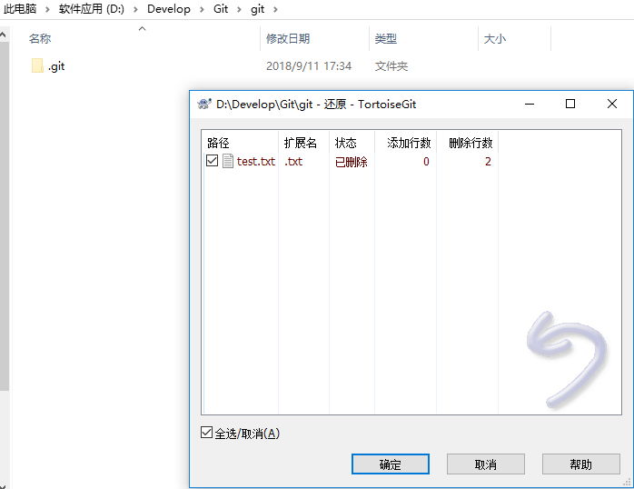
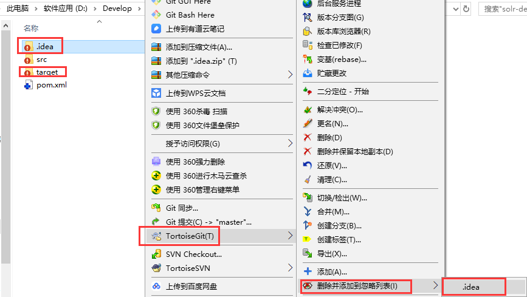

Git（二）使用git管理文件版本（TortoiseGit ）
一.创建版本库
什么是版本库呢？版本库又名仓库，英文名repository，你可以简单理解成一个目录，这个目录里面的所有文件都可以被Git管理起来，每个文件的修改、删除，Git都能跟踪，以便任何时刻都可以追踪历史，或者在将来某个时刻可以“还原”。由于git是分布式版本管理工具，所以git在不需要联网的情况下也具有完整的版本管理能力。
创建一个版本库非常简单，可以使用git bash也可以使用tortoiseGit。首先，选择一个合适的地方，创建一个空目录（D:\Develop\Git\git）。
使用GitBash，在当前目录中点击右键中选择Git Bash来启动。
黑窗口创建仓库执行命令： $ git init
使用tortoiseGit
使用TortoiseGit时只需要在目录（D:\Develop\Git\git）中点击右键菜单选择“Git在这里创建版本库”
点击确定，创建成功 。
版本库创建成功，会在此目录下创建一个.git的隐藏目录，如上所示。
版本库：“.git”目录就是版本库，将来文件都需要保存到版本库中。工作目录：包含“.git”目录的目录，也就是.git目录的上一级目录就是工作目录。只有工作目录中的文件才能保存到版本库中。
二.添加文件
1.添加文件步骤
在D:\Develop\Git\git目录下创建一个test.txt文件，刷新如下，标记蓝色？
在git目录内点击test.txt文件右键客户端工具点击添加

提示添加成功，点击确定，此时 标记蓝色？变为蓝色 +
此时，git目录里隐藏文件 .git 会多差一个暂存区index文件。
提交文件
在test.txt上再次点击右键选择“提交”，此时将文件保存至版本库中。
日志信息输入提交信息（必填项）
点击提交
至此，添加文件并提交到本地仓库完成，文本文件变为带“√”号的图标：标记蓝色 + 变为绿色√
2.工作区和暂存区
Git和其他版本控制系统如SVN的一个不同之处就是有暂存区的概念。
什么是工作区（Working Directory）？
工作区就是你在电脑里能看到的目录，比如我的git文件夹就是一个工作区。其实git目录是工作区，在这个目录中的“.git”隐藏文件夹才是版本库。
Git的版本库里存了很多东西，其中最重要的就是称为stage（或者叫index）的暂存区，还有Git为我们自动创建的第一个分支master，以及指向master的一个指针叫HEAD。
如下图所示：
分支和HEAD的概念我们稍后再讲。前面讲了我们把文件往Git版本库里添加的时候，是分两步执行的：
第一步是用git add把文件添加进去，实际上就是把文件修改添加到暂存区；
第二步是用git commit提交更改，实际上就是把暂存区的所有内容提交到当前分支。
因为我们创建Git版本库时，Git自动为我们创建了唯一一个master分支，所以，现在，git commit就是往master分支上提交更改。可以简单理解为，需要提交的文件修改通通放到暂存区，然后，一次性提交暂存区的所有修改。
三.修改文件
1.提交修改
被版本库管理的文件不可避免的要发生修改，此时只需要直接对文件修改即可。修改完毕后需要将文件的修改提交到版本库。在修改后的test.txt(修改后图标变成红色感叹号)文件上点击右键，然后选择“提交”，和之前的提交方式一样。

2.查看修改历史
在开发过程中可能会经常查看代码的修改历史，或者叫做查看代码的修改日志。用来查看某个版本是谁修改的，什么时间修改的，修改了哪些内容。
可以在文件上点击右键选择“显示日志”来查看文件的修改历史。

3.差异比较
当文件内容修改后，需要和修改之前对比一下修改了哪些内容此时可以使用“比较差异功能”
4.还原修改
当文件修改后不想把修改的内容提交，还想还原到未修改之前的状态。此时可以使用“还原”功能。
注意：此操作会撤销所有未提交的修改，所以当做还原操作是需要慎重慎重！！！
四.删除文件
需要删除无用的文件时可以使用git提供的删除功能直接将文件从版本库中删除。

五.还原删除文件

六.案例：将项目提交到版本库
第一步：把已有java工程solr-demo复制到工作目录中
第二步：将工程添加到暂存区。

点击确定完成暂存区添加。
三、忽略文件或文件夹
在此工程中，并不是所有文件都需要保存到版本库中的例如“.idea”目录及目录下的文件就可以忽略。好在Git考虑到了大家的感受，这个问题解决起来也很简单，在Git工作区的根目录下创建一个特殊的.gitignore文件，然后把要忽略的文件名填进去，Git就会自动忽略这些文件。
如果使用TortoiseGit的话可以使用菜单项直接进行忽略。(这里以IDEA项目演示）

选择保留本地文件。完成后在此文件夹内会多出一个.gitignore文件，这个文件就是文件忽略文件，当然也可以手工编辑。其中的内容就是把.idea目录忽略掉。
同样步骤再次把target目录忽略
四、提交代码
将代码添加到master分支上，其中.gitignore文件也需要添加到暂存区，然后提交到版本库。
提交
七.忽略文件语法规范

空行或是以 # 开头的行即注释行将被忽略。
可以在前面添加正斜杠 / 忽略当前路径文件，但不包括子目录的同名文件。
可以在后面添加正斜杠 / 来忽略文件夹。
可以使用 ! 来否定忽略，即比如在前面用了 *.apk ，然后使用 !a.apk ，则这个a.apk不会被忽略。
* 用来匹配零个或多个字符，如 *.[oa] 忽略所有以".o"或".a"结尾， *~ 忽略所有以 ~ 结尾的文件（这种文件通常被许多编辑器标记为临时文件）； [] 用来匹配括号内的任一字符，如 [abc] ，也可以在括号内加连接符，如 [0-9] 匹配0至9的数； ? 用来匹配单个字符。
看了这么多，还是应该来个例子：
# 忽略 .a 文件
*.a
# 但否定忽略 lib.a, 尽管已经在前面忽略了 .a 文件
!lib.a
# 仅在当前目录下忽略 TODO 文件， 但不包括子目录下的 subdir/TODO
/TODO
# 忽略 build/ 文件夹下的所有文件
build/
# 忽略 doc/notes.txt, 不包括 doc/server/arch.txt
doc/*.txt
# 忽略所有的 .pdf 文件 在 doc/ directory 下的
doc/**/*.pdf

【推荐】百度云“猪”你开年行大运，红包疯狂拿，低至1折
【推荐】专业便捷的企业级代码托管服务 - Gitee 码云
【活动】2019第四届全球人工技术大会解码“智能+时代”
· git --版本对比
· git版本还原
· Git版本标签
· git 版本控制
· Git版本控制
· 苹果中国下调24期分期付款门槛：500元就可以
· 造福淘宝吃货！聚划算签下柳州螺狮粉打造网红食品：目标销售破百亿
· 欧盟版权改革 版权方与谷歌等巨头有喜有忧
· Spotify今日宣布将收购洛杉矶播客工作室Parcast
· 如何用一句话通过面试？美国科技名企版
» 更多新闻...